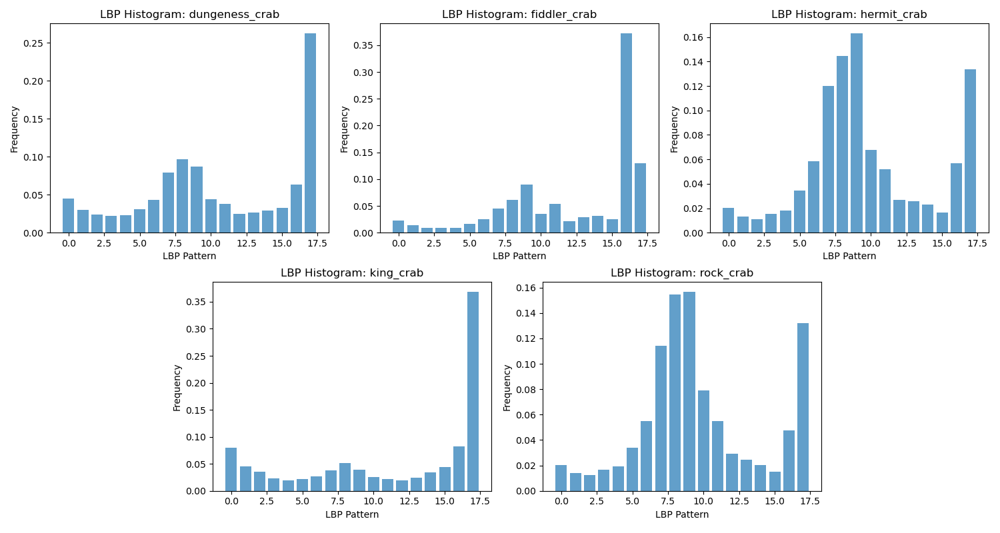
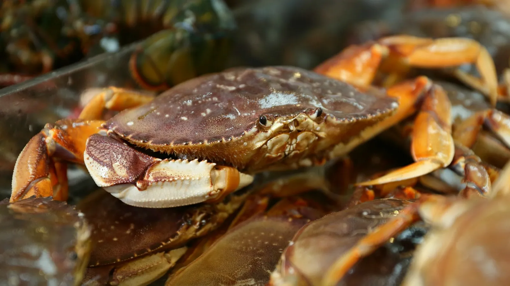

Texture-Feature Analysis Identify and analyze which crab species have similar textural properties with
Local Binary Pattern (LBP), a type of visual descriptor such as texture and
object's surface used for classification in computer vision.
Species-Based Texture-Feature Comparison
Dungeness Crab
Fiddler Crab
Hermit Crab
King Crab
Rock Crab
Species-Based LBP Histogram

LBP-Histogram Between Crab Species
Texture-Feature Heatmap
LBP Texture-Feature Correlation
×
×

Dungeness Crab
An oval-shaped carapace that is yellow-brown to purplish. They have four pairs of walking legs and a pair of claws.
Fiddler Crab
Are small, semi-terrestrial crabs are characterized by extreme cheliped asymmetry in males.
Hermit Crab
A soft exoskeleton and a twisted abdomen to fit into snail shells.
King Crab
They range in color from brownish to bluish red and are covered in sharp spines. They have three pairs of walking legs and one pair of claws.
Rock Crab
A wide carapace that is quite smooth to the touch and two large claws of equal size with black tips.